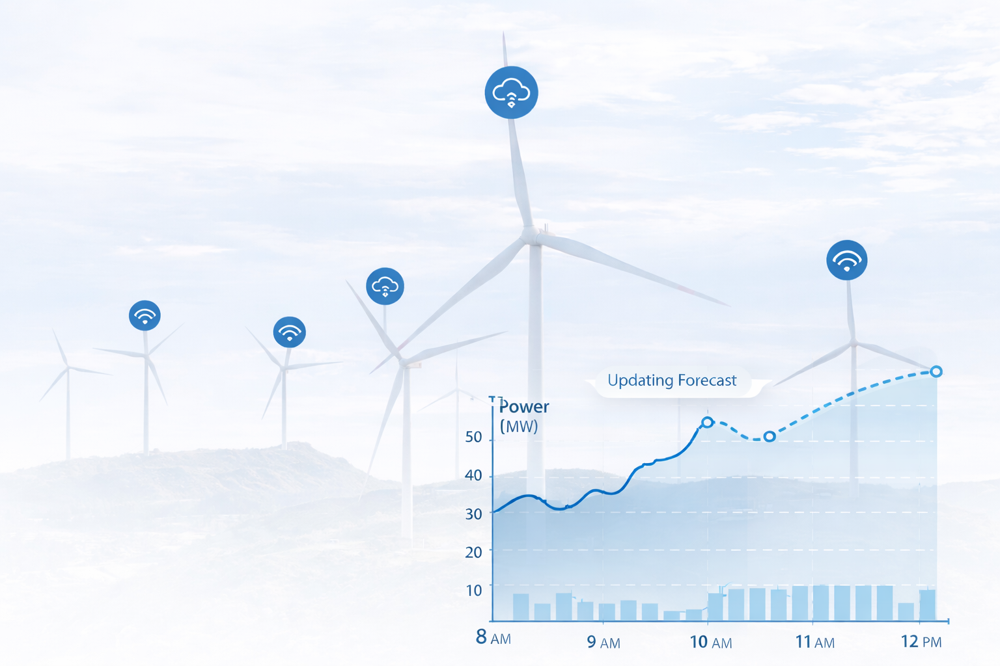

Forecasting
Site-specific modelling with wake effects delivers a stronger short-term signal for scheduling and intraday planning.
Decision support for wind operators and market teams.
Site-specific modelling for short-term wind energy market optimisation and decision support.
Product
Site-specific forecasts linked to market context and probabilistic risk profiles for clear actions per asset.
Site-specific modelling with wake effects delivers a stronger short-term signal for scheduling and intraday planning.
Interpretable drivers reduce bias and improve trust in market signals for traders and schedulers.
Always-on updates surface changing confidence, guiding hedging, curtailment, and reserve decisions.
How you use WindLens
Forecasting is one input. WindLens turns it into clear decisions for operators and trading teams.
Site-specific modelling with wake effects delivers a stronger short-term signal for scheduling and intraday planning.
Interpretable drivers reduce bias and improve trust in market signals for traders and schedulers.
Always-on updates surface changing confidence, guiding hedging, curtailment, and reserve decisions.
Who it’s for
Operators, traders, and IPPs who need clear, decision-ready signals.
Plan dispatch, curtailment, and maintenance with confidence.
Align day-ahead and intraday positions with risk context.
Optimise portfolio performance across assets and markets.
Collaborating with large renewable energy players under NDA
Supported by
Get in touch
Share your assets and market exposure. We’ll show how WindLens supports day-ahead and intraday actions.